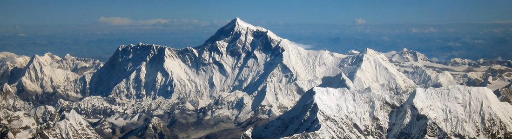
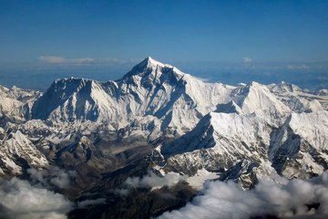
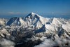
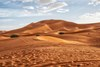
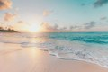
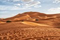

Советы путешественнику
Подготовка к поездке включает документы, здоровье, деньги и безопасность. Правила въезда устанавливает каждая страна, поэтому актуальные требования всегда нужно проверять на официальных сайтах перед покупкой билетов. Российский загранпаспорт нового образца (биометрический) действует 10 лет, старого образца - 5 лет, а многие страны требуют, чтобы на момент поездки у паспорта оставалось не менее трёх-шести месяцев действия.
Раздел 1: Понятия и списки
Основные понятиянумерованный список
- Виза - разрешение страны на въезд, пребывание или транзит, которое оформляют до поездки.
- Страховой полис - договор, по которому страховая компания оплачивает расходы на лечение и другие случаи, оговорённые в договоре.
- Трансфер - организованная перевозка из аэропорта или вокзала до места проживания и обратно.
- Овербукинг - продажа билетов или номеров в большем количестве, чем есть мест.
Чек-лист перед выездомнумерованный список
- Проверить срок действия загранпаспорта
- Узнать визовый режим и оформить визу, если она нужна
- Оформить медицинскую страховку
- Сделать копии документов и сохранить их отдельно
- Скачать офлайн-карты и важные контакты
Что взять с собоймаркированный список
- Документы, билеты и страховой полис
- Личные лекарства и базовая аптечка
- Адаптер для розеток нужного типа
- Средства защиты от солнца
- Внешний аккумулятор для телефона
Деньги и связьвложенный список
- Оплата
- Заранее узнать, какие способы оплаты работают в стране
- Взять небольшую сумму наличных и запасную карту
- Связь
- Местная SIM-карта или eSIM
- Офлайн-карты на случай отсутствия интернета
Раздел 2: Фотографии

Для поездок в горы нужна тёплая одежда и удобная обувь, даже если внизу жарко.
На пляже важна защита от солнца: ультрафиолет отражается от воды и песка.
Большие фотографии
Нажмите на миниатюру: фотография 600 на 400 пикселей откроется в новой вкладке.
| Открыть крупно |  Открыть крупно |
 Открыть крупно |
Раздел 3: Таблица фактов
| Фото | Объект | Ключевые данные | Ссылки |
|---|---|---|---|
 | Загранпаспорт | 10 лет (биометрический) или 5 лет (старого образца); для многих стран нужен остаток действия 3-6 месяцев | Основные понятия Госуслуги |
 | Медицинская страховка | Для въезда в страны Шенгенской зоны нужен полис с покрытием не менее 30 000 евро | Страница о море Шенгенская зона в Википедии |
| Горная болезнь | Может проявляться при подъёме на высоту около 2500 м и выше; набирать высоту рекомендуют постепенно | Подготовка к горам Горная болезнь в Википедии | |
| Правила въезда | Требования устанавливает каждая страна; официальная информация - на сайте МИД | Страница о пустынях Сайт МИД России |